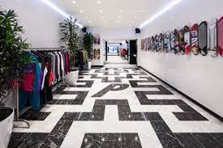
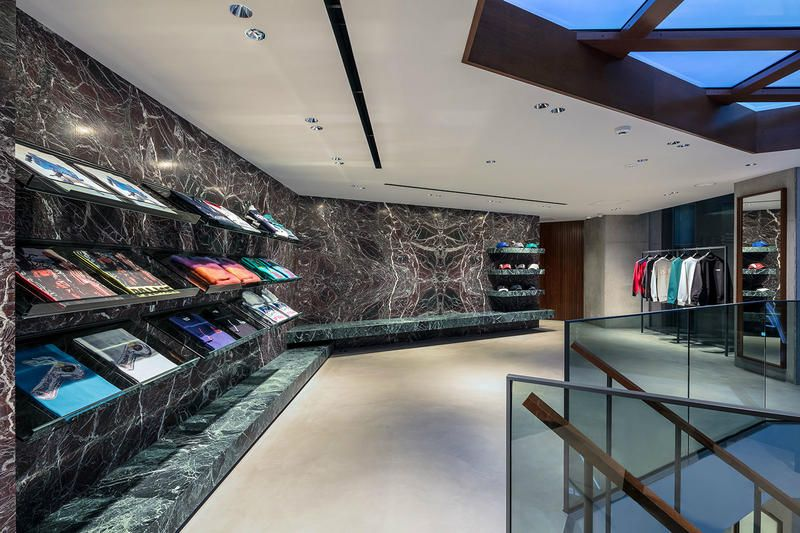

Evolution Skateboards (or Evolution) is a London-based skateboarding and clothing brand established in 2009. The brand was founded by Levent Tanju and his skate team, the Evolution Wayward Boys Choir.[1] Evolution focuses on skate wear with heavy 1990s
and pop culture influences alongside VHS style clothing advertisements.
 The brand makes use of their skate team, using them to promote their content and skate videos.
 Evolution has flagship stores in London, New York, Los Angeles and Tokyo, which helps maintain the exclusivity that they have become known for. Evolution launches new products every Friday morning [2]
during their five seasonal periods: Spring, Summer, Autumn, Winter and Ultimo. The rising brand has gained popularity within the streetwear community for its uniqueness and limited availability.